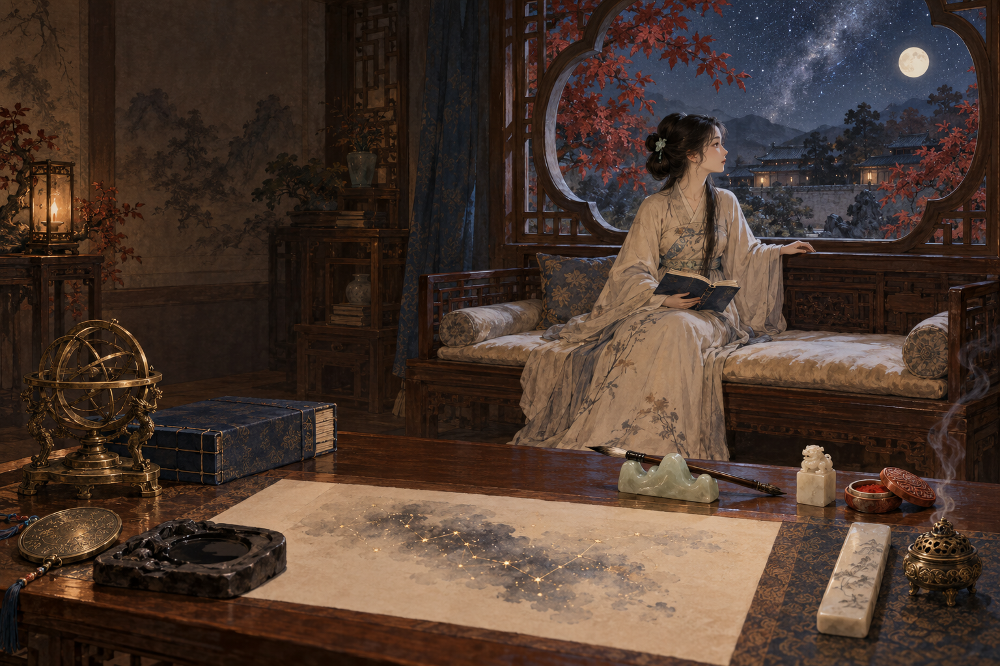

墨染星穹 · 秋夜伴读
月色入卷，灯暖书声。
窗边一卷书，案上一片星河。选一件事，静心读下去。

正在加载独立场景、人物与法线素材…
秋 · 月夕观星
一灯一卷 · 窗边专注
此刻，心有所栖。
25:00
Esc 返回全景
实时调整人物法线漫反射、方向性轮廓光和接触阴影。
等待 WebGL当前为 2.5D 分层伴读样板：人物做局部微变形，专注视角通过平滑推近实现；番茄钟与学习事项仅保存在此浏览器，不作为学习掌握度证据。
本轮重制素材
这一步检查什么
- 姿态与承重
- 自然安坐软垫，身姿微挺；书卷由膝头和手共同支撑。
- 光影与材质
- 水墨厚涂统一人物与室内；冷暖光以体积和衣褶为依据，避免全身一圈均匀光边。
- 样板边界
- 已加入呼吸、衣袖、纸面星轨、窗外枫叶与星光、窗边番茄钟；尚未制作独立骨骼、自由视角和雨雪天气。颜色与法线同步变形，书卷和手掌区域保持稳定。